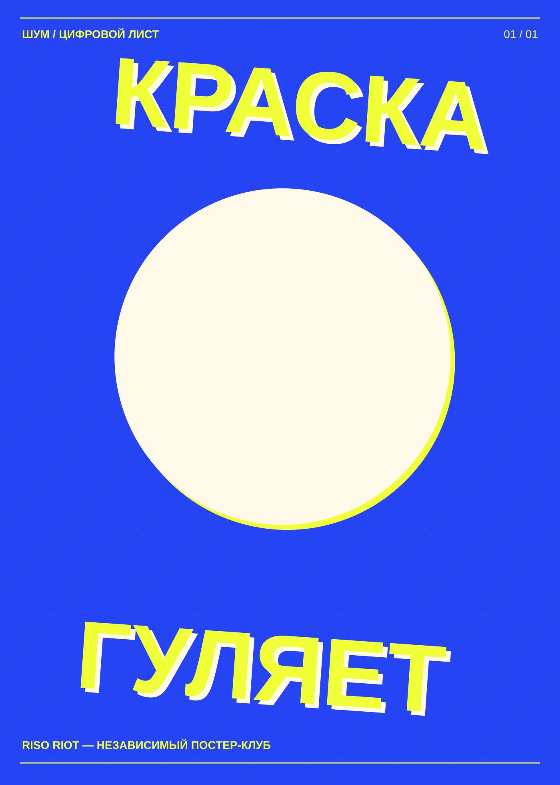

На выставкуЛИСТ 08 / 08

Эксперимент / 2026
Краска гуляет
Если два слоя краски немного расходятся, между ними рождается третий рисунок. Этот плакат целиком про такое случайное соседство.
- Автор
- RISO RIOT / цифровая серия
- Палитра
- Синий / жёлтый / бумага
- Формат
- 1400 × 1960 px / SVG
- Техника
- Цифровая композиция с имитацией
зерна и смещения слоёв
Полутоновые точки меняют размер по диагонали. Они добавляют плотность без градиента и напоминают о физическом зерне печати.

Можно изучать, изменять и печатать этот цифровой макет. Перед тиражом уточни требования мастерской. Шрифты при редактировании зависят от твоей системы.